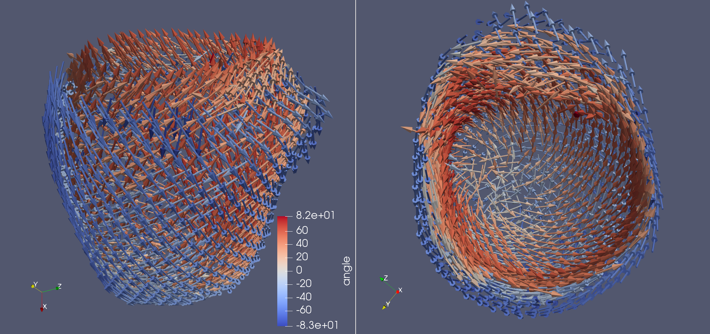

Generating fibers for patient specific geometries#
In this demo we will show how to generate fiber orientations from a patient specific geometry. We will use a mesh of an LV that is constructed using gmsh (https://gmsh.info), see finsberg/ldrb
It is important that the mesh contains physical surfaces of the endocardium (lv and rv if present), the base and the epicardium. You can find an example of how to generate such a geometry using the python API for gmsh here: finsberg/pulse
First we import the necessary packages. Note that we also import meshio which is used for converted from .msh (gmsh) to .xdmf (FEnICS).
import ldrb
import cardiac_geometries
Convert from gmsh mesh to fenics
mesh, markers, marker_functions = cardiac_geometries.gmsh2dolfin("mesh.msh")
Update the markers which are stored within the mesh
ldrb_markers = {
"base": markers["BASE"][0],
"lv": markers["ENDO"][0],
"epi": markers["EPI"][0],
}
Select a space for the fibers (here linear lagrange element)
fiber_space = "P_2"
Create a dictionary of fiber angles
angles = dict(
alpha_endo_lv=60, # Fiber angle on the endocardium
alpha_epi_lv=-60, # Fiber angle on the epicardium
beta_endo_lv=0, # Sheet angle on the endocardium
beta_epi_lv=0,
)
Run the LDRB algorithm
fiber, sheet, sheet_normal = ldrb.dolfin_ldrb(
mesh=mesh,
fiber_space=fiber_space,
ffun=marker_functions.ffun,
markers=ldrb_markers,
**angles,
)
Save to xdmf with dolfin.XDMFFile(mesh.mpi_comm(), “patient_fiber.xdmf”) as xdmf: xdmf.write(fiber)
Use this function to save fiber with angles as scalars
ldrb.fiber_to_xdmf(fiber, "patient_fiber")
